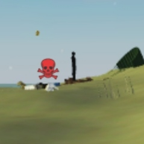

Does anyone know who this man is?
I saw him once on the internet but i can't find him
if you have any information about him pls post a comment on this youtube video with the hashtag #iknowman
comment in the comment section
if you find this man you will get 3 robux ,5 hypixel skyblock coins and a lolipop wraper!
Local man gets winning lottery ticket!
He is very happy to win the money since he desperately needed it for living expenses.
Be on high alert!!!
This man was spotted trying to unlock my phone.
Since then i tried to catch him but to no avail.
If you happen to have any information on him please contact me through this link:
comment in the comment section
And don't forget to add the hashtag #wantedman !

Man spotted in tree trying to watch a concert for free
The man was seen in a tree by security and when he was asked to show his ticket, he fled the scene.
There is a warrant out for his arrest, if you happen to see him please alert the proper authorities.
Live footage from the invasion of Ukraine
Content warning: the following video will contain blood and violence (kind of), viewer discretion is advised. (loud)
Get hyped for the new big European event
If you want to have the fight of your life, you better get ready for the Balkan Royale!
The Balkan Royale is the highly requested battle royale but with balkan men!
If you are ready to brawl against other balkans for the chance to win a Dacia 1930 be sure to sign up today before all of the available places will be occupied!

Nice vacation that should be on your travelling list!
One of our writers has recommended a great city with wonderful views and nice fauna.
That place is the city of Man in the Ivory Coast! It has many attractions like:
- La Cascade waterfall
- This waterfall is the main attraction around Man due to its weired nature, clean water and the bamboo forest that surrounds it.
- La Dent de Man
- This is the a rocky outcrop that overlooks the whole city of Man and the monkey forest.
- The Roman Catholic Diocese of Man
- This cathedral is the main attraction around Man, worth a visit.

More than that, the locals are very kind to evryone so don't feel weired engaging with them in conversation!

Wonder man has a superpower that all Africans dream of
This man could be the savior of every African village by using his superpower.
His superpower being water creation. He can make water out of thin air.
Will he use his power for good or evil? Idk, we don't have any reporters in Africa
so if there are any massive floods in the near future you know who to blame.
Source for the video: Corespondent
News on the missel giveaway
We are happy to announce that the winner of the missile giveaway is non other than Man_3543, a proud member of our community.
He is very happy for his winning since he always wanted a missile because he had a fascination with flying stuff.
Here is the video that this happy man has sent to us so that we can be sure that he got his rightful winnings.
"Yeah missiles are cool and stuff, that's why i allways wanted one, for coolness" says Man_3543
Local man just doesn't care anymore
This man just stopped caring about anything since he thinks that it just doesn't matter anymore.
"Life's a bit sad, why bother with stuff anyway." says man.
A war on the shadow men of Isle
They will be doomed
The shadow men of isle must be stopped as fast as possible due to ther violent behaviour.

This is how shadow men look like, at least when you can see them because there power is invisibility.
The only way to spot them is with the "pinger" which pings them, so be vigilent and ready to fight the evil black tall man.
STAY STRONG✊ AND FIGHT BACK🤺
BREAKING NEWS
Spec ops team sent to isle to defeat the shadow men
In a countter-offensive movment against the shadow men a team was formed
from the most skilled shadow men hunters so that they can defeat this new isle treath.
"We will asure you that all of the shadow men will be eradicated from Isle within 15 hours." said the leader of the hunters.
The evil shadow men that plagued the Isle are no longer an issue
The hunters did a very good job in getting rid of the shadow men.
Among the islanders there were 3 lucky survivors who managed to survive this nightmare of a situation.
Here is one of the only found photos of them:

Man who fooled messenger into stopping antohere man from gaming caught
The man in question is man-8944, he impersonated the secretary of Fasao Central and sent a man to stop another man from gaming.
Thankfully the man whomst was gaming was the CEO of Fasao Central and told the mistake that just took place.
The man that was sent quickly found man-8944 and jailed him.
A picture of CEO of Fasao Central (i didnt want to put this here he held a gun to my head pls help):
A chnage in codeing
Due to the admision of ManNews CEO in Mate-Info he decided to swtich from JavaScript C++.
This will bring much pain to him but it is a necessary change so he can continue to to code in school.